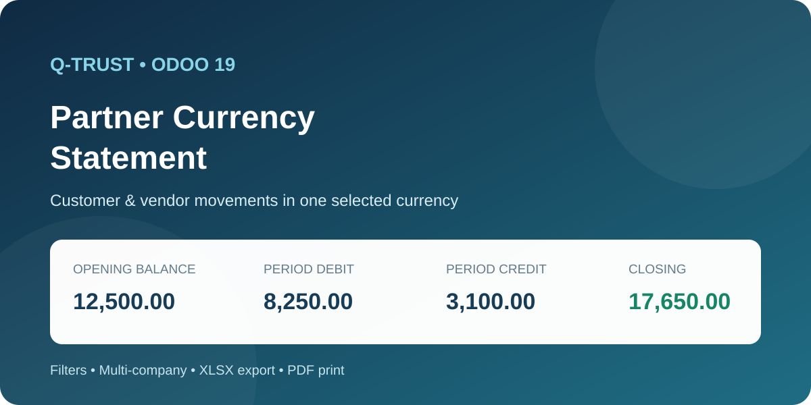
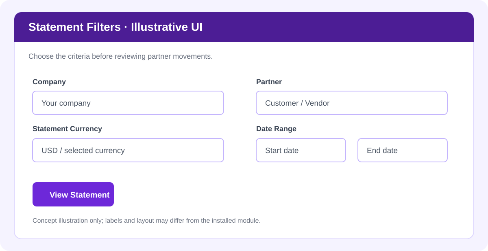
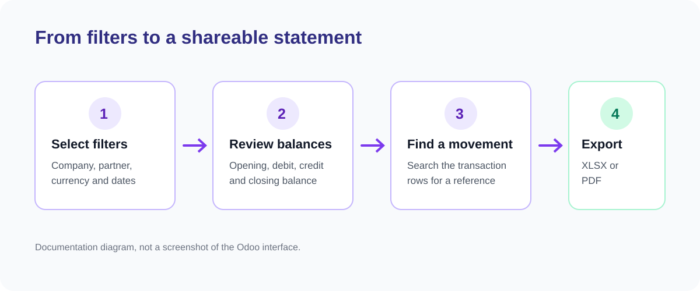
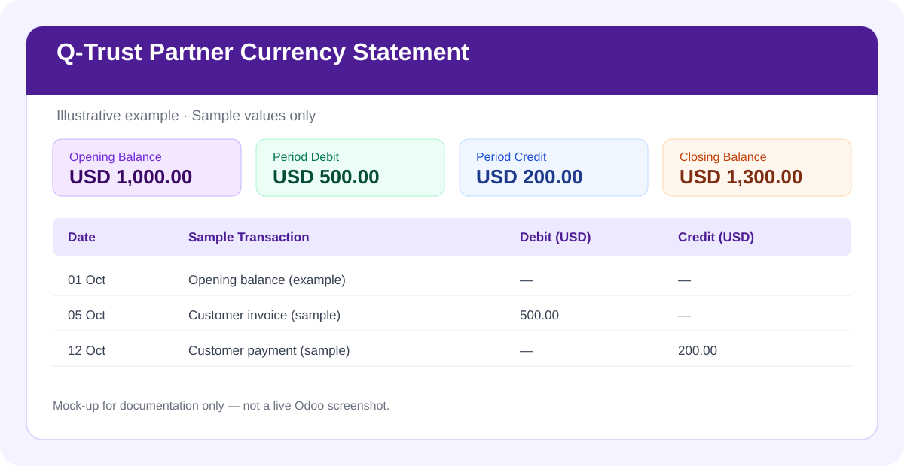

Review partner account movements for a selected company, partner, currency, and date range. See opening balance, period debit and credit totals, and closing balance in one report.
In Odoo, go to Accounting → Reporting → Foreign Currency Statement.
Select company, customer or vendor, currency, and reporting date range. The illustration below explains the filter concept; actual labels can differ by module version.

Review opening balance, debit and credit totals, closing balance, and the transaction rows provided by the report. Use row search to locate a movement.
Use the available XLSX export or PDF print option to share the statement.

The following is an illustrative example using sample values, not a live result or screenshot from a customer database.

Opening balance + period debits − period credits = closing balance when presented from a customer/receivable perspective. Interpret signs according to the report presentation and account type.
account)Before production use: test multi-company access, foreign-currency settlements and reconciliations, and PDF/XLSX output in a test database.
Illustrations on this page are conceptual examples. For exact field names and screen layouts, refer to the installed module.